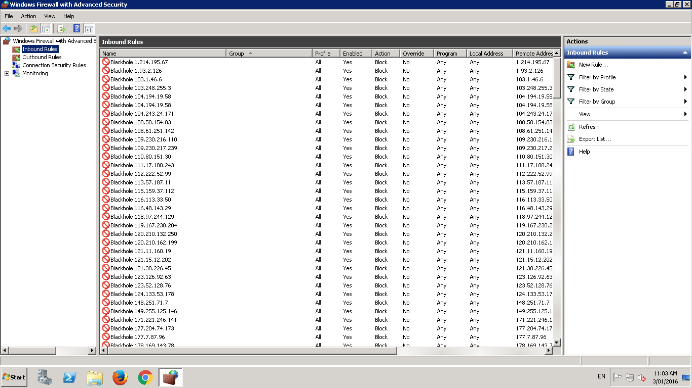

TS Block is one of my favorite little scripts for Windows Terminal Servers it's a bit like Fail2ban for Windows.
It's a fairly simple script with a few configurable options and sane defaults that does pretty much what it says on the tin. After a set number of failed logins in a given time to a terminal server it will add a rule to the windows fire wall to block all traffic from that address.
 Windows firewall after TS Block has been running for a few days.
It when it blocks an IP address it doesn't just block logins but blocks all traffic from that address. If you have a windows server with port 3389 open to the internet for any reason, for example maybe you have just started an Amazon EC2 with it's default settings and haven't just white listed your IP address. I'd recommend adding TS Block to your server.
Personally I go with a fairly restrictive approach of 5 failed logins in 10 minutes gets a 24 hour ban. It's enough to give legitimate users a couple of guesses if they have forgotten / mistyped their password but at a maximum of 1 guess every 2 minutes it blocks brute forcing accounts. It also instantly blocks any address that attempts to login as Administrator1.
Even though I've been around for a while and should be used to this sort of thing, I still find it staggering how many brute forcing bots are out there I get 20 to 30 unique IPs banned every day2.